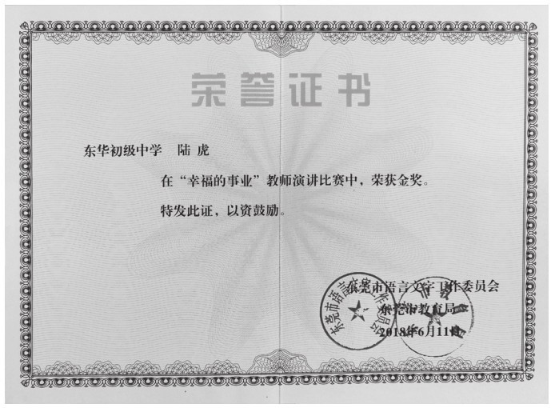
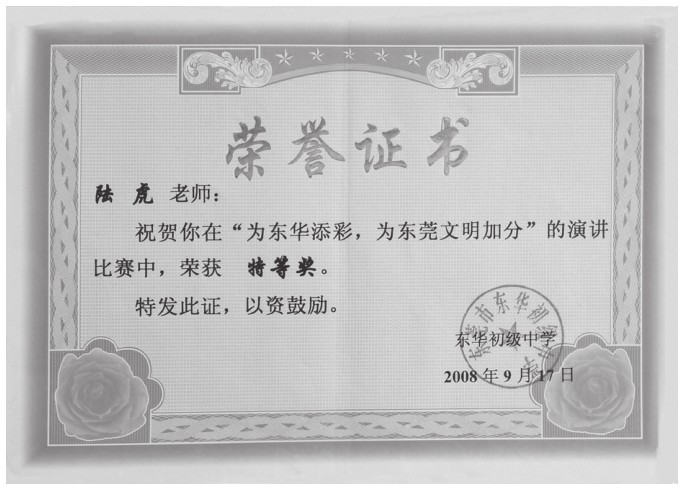

整理完书稿，终有一种如释重负的释然。这里面有我曾经做班主任时的一些青涩思考和肤浅尝试，有我做学校行政时对教育教学的一些思考和努力，也有我做校长时在一些场合和师生们交流的讲话发言以及对学校管理的一些思考，也有从同事、同行、专家的经验介绍或者专题讲座中获得的智慧整理。这些文稿，有的作为“豆腐块”文章，公开发表在一些杂志上，更多的是发表在自己的博客上“聊以自乐”，部分文章还得到了热心网友的转载和分享。由于所收集的文稿时间跨度长，且每篇文章在写作的时候，自己的阅历、经历、职务、眼界不尽相同，再加上自己的学力、观察力、思考力、领悟力有限，因此通篇来看显得肤浅，甚是贻笑大方。
今天不惮将其整理出来，算是对自己的一种总结和再出发。同时，对于本书中所借鉴的先贤与同行的智慧深表敬意。对为本书提供智力支持和智慧共享的同仁、同行表示诚挚的谢意。当然，在这里要特别感谢我的导师——陕西师范大学的马瑞映教授，他在百忙之中为本书慷慨赐序，令本书增色不少。他的字里行间，满满都是对学生的鼓励和鞭策。
本书第一篇章“家长里短班主任”，收录的是我做班主任时，在班级管理中的实践总结和心得体会。班主任工作是一个充满了乐趣和艺术的工作，有爱心、有热心、有恒心，才能将这份工作做出成绩。截至现在，我做了11年的班主任，酸甜苦辣与成长交织在一起。看着一届届学生走进更高一级的学府、走向社会贡献自己的价值，是作为班主任的我，最大的幸福。
本书第二篇章“嬉笑怒骂说教育”，收录的是我在这15年教育生涯中，一些教育随笔和杂文，时间跨度较长，甚至有的文章现在看来略显生涩，观点和看法也有待商榷。但每一篇文章都是我在那时那刻最真实的想法，也见证了我在教育事业上的不断成长。教育是一件伟大且复杂的工作，因为教育对象千差万别，因为教育环境日新月异，唯有不断地探索和学习，自己的教育方式、管理方式才能不断进步。
本书第三篇章“话里话外有力量”，收录的是我作为普通老师、班主任、管理干部、学校校长等不同身份，在一些活动现场、会议现场的致辞和讲话。这些讲话也是我对教育教学的一些思考和努力方向。陶行知先生说，“千教万教教人求真，千学万学学做真人”。教育的确就是指向一个“真”字，我所倡导的“发现教育”，本质上也是指向未来，指向一个“真”字。去发现、去寻找、去实践，去发现真善美，去发现信雅达，去发现学生的潜力，去发现教师的特点，去发现管理的关键，去发现教育的魅力。
回首自己短暂却深刻的教育历程，如果要用一个词来概括我的感受，那一定是“幸福”。
我是一名幸福的教育人。
我想从两篇有关“教师幸福”的演讲稿说起。
为了深入贯彻党的十九大精神，践行社会主义核心价值观，展示东莞市教师追求理想、敢于创新的奋斗精神，表现教师们勤于奉献、乐于教学、积极向上的风貌，展示教师们与学校共同发展、与学生共同成长的成功感、成就感、幸福感，东莞市语言文字工作委员会、东莞市教育局于2018年6月11号在东莞市开放大学举行了“幸福的事业”教师演讲比赛。全市近100名大中小学及幼儿园教师代表参加了本次盛会的角逐。

东莞市教师演讲比赛金奖
当时由于拿到比赛通知的文件较晚，准备时间较为仓促，时任东华中学思政处主任的我直接被校长“委以重任”，点名我代表学校参与本项赛事。侥幸的是，我不负所托获得了那次演讲比赛的金奖。再次翻阅当时的演讲稿，依然思绪万千，幸福满满，那是作为一名教育人发自内心的幸福。
演讲稿一：《做一个幸福的教育人》
尊敬的各位评委、各位同仁：
大家好！
很高兴参加本次演讲比赛，因为这个契机，让我回望走过的十三年教师生涯。
2005年7月，大学毕业的我挤了28小时的绿皮火车，拖着疲惫的身体、怀着激动的心情，踏上了这片土地。当时的我，立志做一个幸福的教育人，与学生一起享受成长。
然而，教育最初带给我的却不是幸福。
有一个叫婷的女孩儿，因为早恋被老师发现，就编造了许多不想上学的理由。其父亲不问青红皂白，打电话质问我，并扬言要给我好看。对于初登讲台的我，当时是委屈的、是害怕的。等他怒气冲冲地来到我办公室，得知真实情况后，又准备暴打撒谎的孩子。我将惊恐的孩子拉到身后，用并不高大的身躯，拦住了失态的父亲。后来，事态得到平息、孩子得到教育，可谁能理解我那时的委屈与挫败？多年后，当一事业略有小成的都市丽人，拿着结婚请柬出现在我的面前，表达当年的歉意和多年的谢意，谁又能感受我这时的快乐与幸福？
原来，幸福需要等待。
有一个男生叫阿威。刚接触时，他正为学业苦恼。一天他来找我，“您的历史课太精彩了，看了很多书吧，能借几本给我吗？”我爽快地答应了。从此书籍成了我和阿威交流的媒介，从阅读到学习、从学习到理想……2015年，阿威如愿考上了北京大学，却义无反顾地选择了历史专业。“这个专业的就业和前景都不被看好呀，再考虑考虑”。阿威说，“因为您的历史课，我喜欢上了历史专业，我无悔！”哎，谁能理解我对他前途与发展的忧虑？谁又能理解我为人师的成就与幸福？
原来，幸福来自学生的认同。
十三年来，青年书生变成了中年大叔，却得千百桃李香满园。我的学生，有的进入名校名企，有的回归普通生活，有的在象牙塔继续拼搏。他们爱岗敬业、他们诚信友善，他们努力将自己所学成就更好的自我。
十三年来，乡音未曾改变，东莞已成故土。高铁、地铁见证了城市的发展，“慧教育”描绘出未来的美好蓝图，而我也成长为一名年轻的中学高级教师、学科带头人。挚爱的事业仍在继续，幸福的故事还在发生。
原来，幸福就是与学生共成长、与时代同进步。
幸福还是什么？是“为伊消得人憔悴”的付出；是“为谁辛苦为谁甜”的耕耘；是“稻花香里说丰年”的收获。幸福又从哪里来？学生是幸福的源泉，让我成长；学校是幸福的航船，助我远航；东莞是幸福的沃土，在这里，我找到了归属，还找到了幸福！
谢谢大家！

东华中学演讲比赛特等奖
这是我从业13年来对于幸福的理解。而在我刚从业三年时，也参加了一次教师演讲比赛，当时的演讲比赛是“为东华添彩，为东莞文明加分”系列活动内容，演讲的主题是“做一个学生喜欢的教师”（在那次演讲比赛上，我拿到了东华中学教师演讲比赛特等奖）。站在现在的岁月里，回望职业生涯初期的我，那时的我显得青涩和稚嫩，但那份对教育的热爱、对学生的热爱，以及从教书育人中得到的那份幸福，溢于言表和文字。这篇演讲稿，还收录进了东华中学校刊《华韵》2008年第16期。
演讲稿二：《点滴精彩，凝聚幸福》
尊敬的各位评委、各位同事，亲爱的同学们：
大家好！
我今天演讲的题目是《点滴精彩，凝聚幸福》。
记得在大学即将毕业的时候，许多亲朋好友都奉劝我：千万别去中学当老师，当老师苦，当老师累，当老师的生活太遭罪。但是我还是义无反顾地选择了教师这个职业，是一时冲动？还是无知的年少轻狂？
时光荏苒，从教已经三年，一路走来，感慨良多！当老师苦吗？苦！苦到没日没夜。连最基本的八小时睡眠都无法保障。当老师累吗？累！累到没有自己的空闲，没有时间去享受正常的家庭温馨。但是，当我看见我的学生们从无知走向睿智，由脆弱走向坚强，由依赖走向独立，从懵懂幼童，成长为翩翩少年，才发现，曾经的付出和劳累，都是值得的！正因为值得，才心甘情愿，以教书为乐，以校为家，才会恋上校园这方纯洁的天空，喜欢讲台上的从容自在，喜欢粉笔书写的点滴精彩。
还记得，与学生一起，在宿舍里清扫尘埃，在运动场上摇旗呐喊；为了一道难题而冥思苦想，在社会实践中把梦想飞扬；烈日下苦练体操的艰辛，课间里活跃的恣意疯狂；清晨里朗朗的读书声，灯光下苦读的背影；课桌前端坐的身姿，每日一歌将青春唱响；就这样，我和学生一起成长，一起快乐，一起悲伤！
还记得，我的学生毕业时，来到我的办公楼前，集体高唱“朋友一生一起走，那些日子不再有，一句话，一辈子，一生情，一杯酒……”还记得我的学生们在节日发给我的短信，是问候，是思念，是牵挂，是祝福。还记得教师节的早晨，我的办公桌上花花绿绿的一堆贺卡，贺卡上面，我的学生说：老师，其实你一点儿也不帅，但你却上出了这世上最帅的课，让我痴迷；我的学生说：老师，你一点也不像老师，但在我生病时你焦急的样子，让我感动；我的学生说：老师，你一点也不温和，但在我犯错时你严厉的话语让我铭记；我的学生还说：老师，我爱你，爱得很自私，生怕别人把您抢了去……
我是何等的渺小啊，是学生，可爱的孩子们，是他们纯洁善良的心，让我感到自己是如此的高尚和伟大，最应该说感谢的是我而不是他们。
感谢学生——给了我自信，激发了我无穷的工作热情和灵感；感谢学生——给了我责任感，让我学会用广博、宽厚的师爱包容所有的孩子；感谢学生——给了我快乐，让我由衷地产生对生活的热爱；感谢学生——给了我幸福，让我知道我的事业只有起点，没有终点；感谢学生——让我知道，做老师，就得做一个被学生喜欢的人！
谢谢大家！
因为是演讲的缘故，时间和篇幅限制（时长要求不超过5分钟），无法将教师的幸福更加丰满地表述出来。作为教师，因被学生喜欢而幸福；作为教师，因被学生铭记而幸福；作为教师，因帮助学生成为更好的他而幸福；作为教师，因看到自己的学生健康成长、成为对社会有价值的人而幸福。
有人把教师比作蜡烛，还有人把教师比作春蚕，“春蚕到死丝方尽，蜡炬成灰泪始干”。我不同意这种比喻。教师应该是成就别人的同时，也在成长自己。唯有这样，教师的职业生涯才是幸福而不是悲怆的。教师的幸福一方面来源于学生的成长，另一方面来自自己的成长。
唯有成为一名与学生共同成长的教育人，才是教育者的幸福，也是教育事业的幸事。这种成长，包括教师自我的专业成长、教学艺术的成长、教育智慧的成长，也包括你用自己的言行帮助着自己的团队、自己的同事一起成长。
愿有岁月可回首，且以幸福共白头！
陆虎谨识于东莞雲崧書屋
2021年3月3日